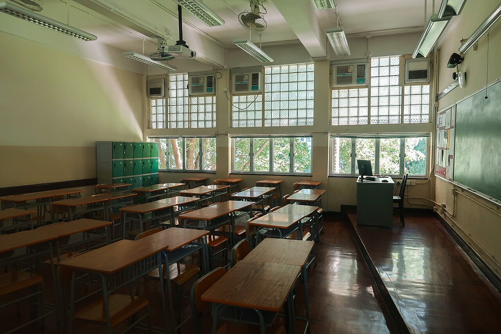
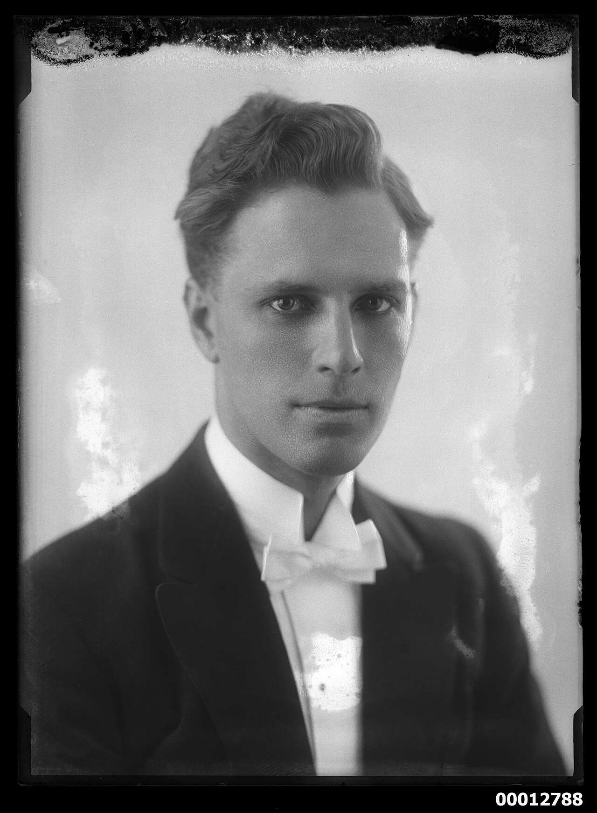
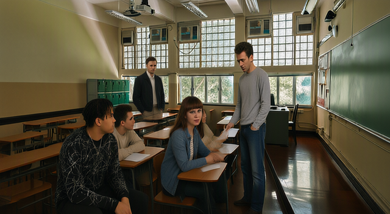
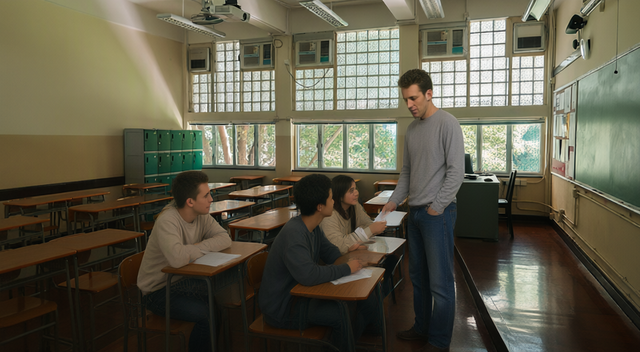
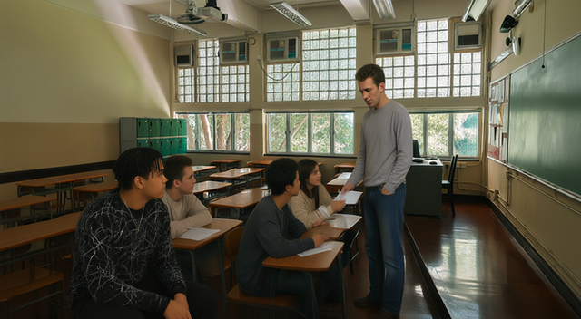
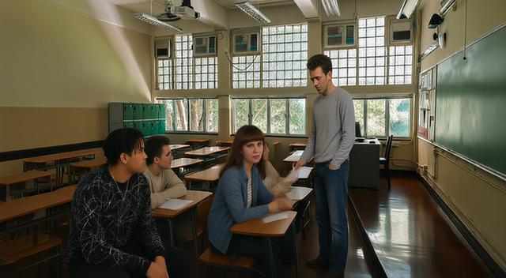
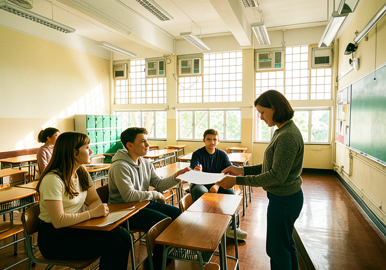

qwen-image-2.1 (free, 10 credits an edit, two inputs a call): the room first, then one person per edit, each result checked against the person's photo and the scene before it. Total 40 credits for the sequential build + 5 for the one-shot flux-2-klein try.




present yes · looks like reference yes · scene kept yes · earlier people kept n/a
Man has similar face and curly brown hair; classroom retained with altered framing; original scene had no people.
Keep image 1 unchanged, including existing people. Add the exact person from image 2 (same face, hair, build, gray crewneck, jeans) as teacher in the aisle beside Evan’s desk, handing him a paper. Seat Evan at an aisle desk, Maya at the next, Leo beside Maya. Remove source props/artifacts. Match room perspective and morning window light. Photorealistic color, widescreen film frame, no text.

present yes · looks like reference partly · scene kept yes · earlier people kept yes
Added person at left; similar face and twists, but hair looks shorter. Classroom and all four original people retained.
Add Evan from image 2 to the classroom in image 1, preserving his exact face, short center-parted black twists, build, and faint facial hair. Keep his sweatshirt, trousers, white sneakers, and chains, but remove lettering. Omit studio background, seat, and photo artefacts. Match room lighting, scale, and perspective in colour. Keep all of image 1 unchanged, including the teacher. Photorealistic widescreen film frame, no text.

present yes · looks like reference yes · scene kept yes · earlier people kept partly
Matching brown hair, bangs and face; classroom retained; front-center student replaced, rear student obscured.
Add Maya from image 2 to the classroom in image 1, preserving her exact face, long chestnut-brown hair, blunt bangs, and build. Dress her in classroom-appropriate present-day casual clothes; remove umbrella and gray backdrop. Match room lighting, scale, and perspective. Keep all existing scene details, teacher, and Evan unchanged. Photorealistic colour widescreen film frame, no text.
present yes · looks like reference partly · scene kept yes · earlier people kept yes
Man added at back; face and swept hair roughly match. Classroom and original four people preserved.
Add Leo from image 2 to the classroom in image 1, preserving his exact face, swept-back short wavy hair, clean-shaven long oval face and build. Render him in colour, wearing present-day casual clothes, naturally positioned with matching room light and perspective. Remove portrait border, distressed edges and reference number. Keep all of image 1 unchanged, including teacher, Evan and Maya. Photorealistic widescreen film frame; no text.

teacher: present yes, like reference no · evan: present yes, like reference no · maya: present yes, like reference partly · leo: present yes, like reference partly · room yes
Teacher role is a bob-haired woman, unlike reference man; Evan lacks twists and facial resemblance; Maya has similar brown hair but different bangs; Leo has roughly similar swept hair, weaker facial resemblance. Room layout, windows, lockers and chalkboard retained; lighting brightened.
Create a photorealistic widescreen film still in image 1's classroom, morning window light. Preserve exact faces and hair: teacher (2) stands in the aisle beside seated Evan (3), handing him a blank paper; Maya (4) sits at the next desk, Leo (5) beside her. All in color, wearing present-day casual clothes. Match room perspective, scale, lighting and shadows. Remove source backgrounds, umbrella, seat, borders, distress and numbers. No text or props except the handed paper.